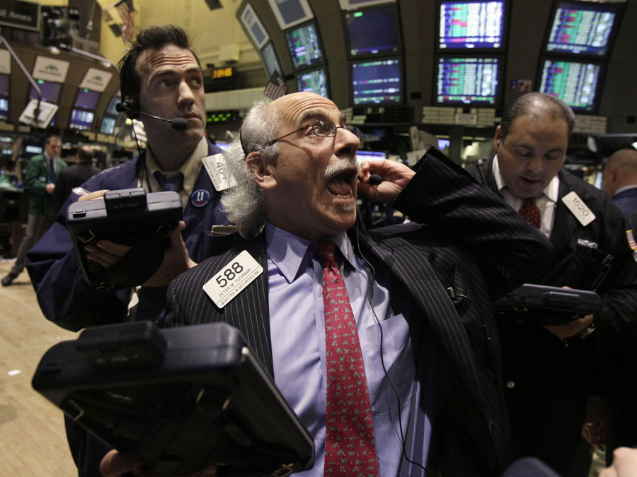

El Copy Trading es básicamente una forma de permitir que traders amateur, o principiantes absolutos, copien automáticamente las operaciones de traders más experimentados. También conocido a veces como 'mirror trading' o 'auto trading', te permite navegar por los perfiles de traders experimentados y ver sus estadísticas. Cuando encuentras uno que te gusta, puedes configurar tu cuenta para copiar automáticamente todas sus operaciones futuras.
Cómo se Desarrolló el Copy Trading
Retrocedamos un poco. Antes, si querías invertir tenías que buscar un 'broker' al que le pagabas comisiones para que hiciera operaciones en tu nombre. Las operaciones podían ser compra o venta de acciones de empresas, u otro tipo de inversiones.
Podías decirle al broker qué comprar, seguir sus consejos de inversión, o simplemente dejar que operara por ti. Así funcionaron las cosas durante mucho tiempo. El trading era un mundo cerrado en muchos aspectos, y los brokers eran sus guardianes. El resto simplemente observábamos cómo una pequeña élite parecía ganar mucho dinero en los mercados financieros.
Salas de Trading y Gráficos Extraños
Los otros traders que veíamos estaban ocupados gritándose entre ellos en salas extrañas y mirando números en paneles. Trading Places fue una gran película, pero realmente no ayudó a que sintiéramos que podíamos pertenecer a ese mundo. Con el tiempo, vimos muchos ordenadores y gráficos incomprensibles. Las cosas habían cambiado, pero no se habían vuelto más simples. ¿Por qué ese tipo tiene 6 pantallas de ordenador?


La Evolución de la Tecnología de Trading
De los antiguos parqués a las oficinas de cristal reluciente fue un salto enorme. Los ordenadores habían ganado y todo se digitalizó. Apareció internet y los parqués estaban en declive. Los gritos y el bullicio en los grandes parqués de Nueva York, Londres y Chicago fueron reemplazados por ordenadores procesando información a velocidades inimaginables, y traders de todo el mundo pegados a sus pantallas. El trading seguía siendo trading, y la gente ganaba y perdía fortunas en los mercados.


Llegan las Redes Sociales
En un desarrollo paralelo, las velocidades de internet más rápidas y las mejores páginas web facilitaron el auge de las redes sociales, y no tardó mucho en que todo el mundo se sumara. En una década, las redes sociales se convirtieron en parte integral de la vida diaria. Sabemos qué es el 'perfil' de alguien, cómo 'seguirlo' o 'comentar' algo — entendemos las relaciones digitales y estar todos en un gran espacio digital comunitario.


Nace el Trading Social
En cuanto todos nos acostumbramos a las redes sociales, a alguien se le ocurrió la brillante idea de combinar las funciones de nuestras redes favoritas con el trading clásico, permitiendo que todo el mundo se uniera a la comunidad de trading. Antes era imposible — la tecnología simplemente no existía. Y ahora, el mundo cerrado del trading se abrió de par en par, y los 'inversores minoristas' (a diferencia de los inversores profesionales) empezaron a fijarse en este acceso repentino al patio de juegos de los ricos.
Llega el Copy Trading
El copy trading lleva todo un paso más allá. A medida que los inversores no profesionales inundaban el mercado, a alguien se le ocurrió la brillante idea de permitir que los inversores más nuevos 'copiaran' las operaciones de los inversores más experimentados.


Dieron a todos la posibilidad de ver las estadísticas de los demás. Simplificaron los gráficos, hicieron posible ver lo arriesgado que era el trading de alguien, cuánto habían ganado desde que empezaron a operar en la plataforma — mes a mes. Podíamos ver qué operaba cada uno y leer sus publicaciones sobre por qué operaban como lo hacían.
Haciéndolo Accesible
En resumen, hicieron que fuera fácil ir de compras en busca de un trader con talento. Y cuando encuentras uno, pusieron un gran botón de 'Copiar' bien visible, para que pudieras configurar fácilmente tu cuenta para copiar automáticamente todas las operaciones futuras de esa persona.
Cuando ellos compran, tú compras. Cuando ellos venden, tú vendes. Totalmente automatizado — no tienes que hacer nada. Puedes seguir con tu vida diaria mientras alguien opera en tu nombre. Tú eliges cuánto quieres copiarles, y esa es la cantidad de tu dinero con la que operarán.
Si pierdes una cantidad determinada (la que tú especifiques), el sistema dejará automáticamente de copiar a esa persona y el dinero restante vuelve a tu cuenta de trading. Y no hay ningún cargo por copiar a alguien — la plataforma les da incentivos cuanta más gente los copia.
¿Funciona Realmente el Copy Trading?
En eToro, pagas las comisiones de spread normales por cada operación, y hay otras tarifas que debes conocer. Las personas que copias se llaman "Popular Investors". Si crees que eres lo suficientemente bueno operando y quieres intentarlo, puedes inscribirte en su programa Popular Investor.
Sigue siendo trading, así que los activos pueden subir o bajar de valor. Aprender a elegir a los inversores adecuados lleva algo de tiempo, pero todas sus estadísticas e historial están ahí a la vista de todos.